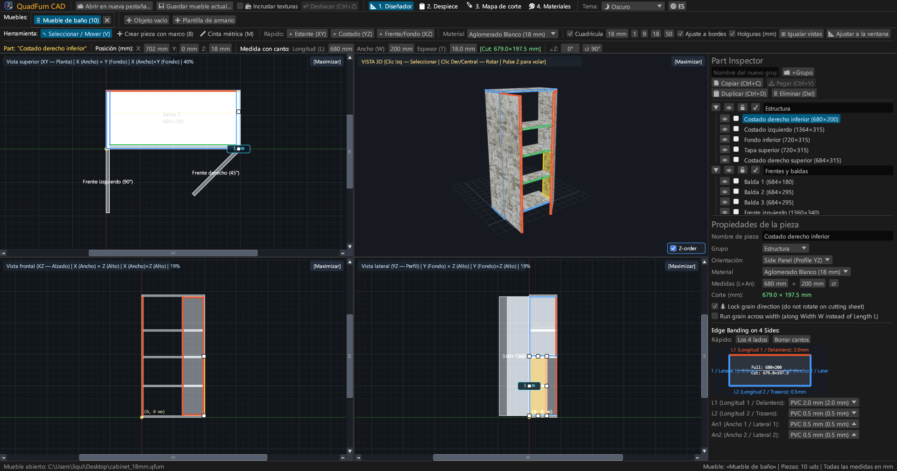
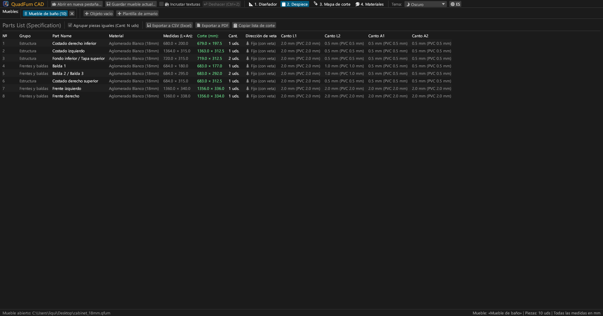
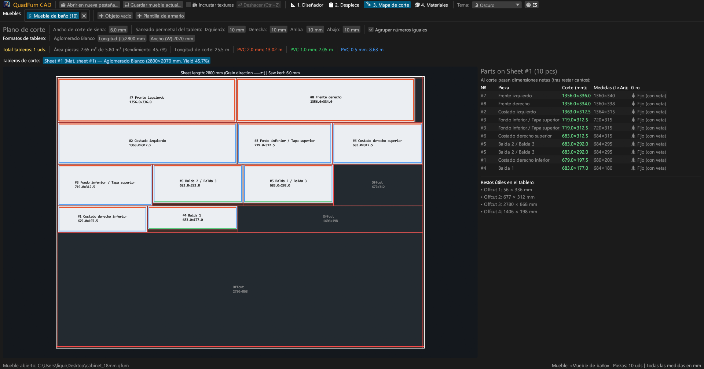
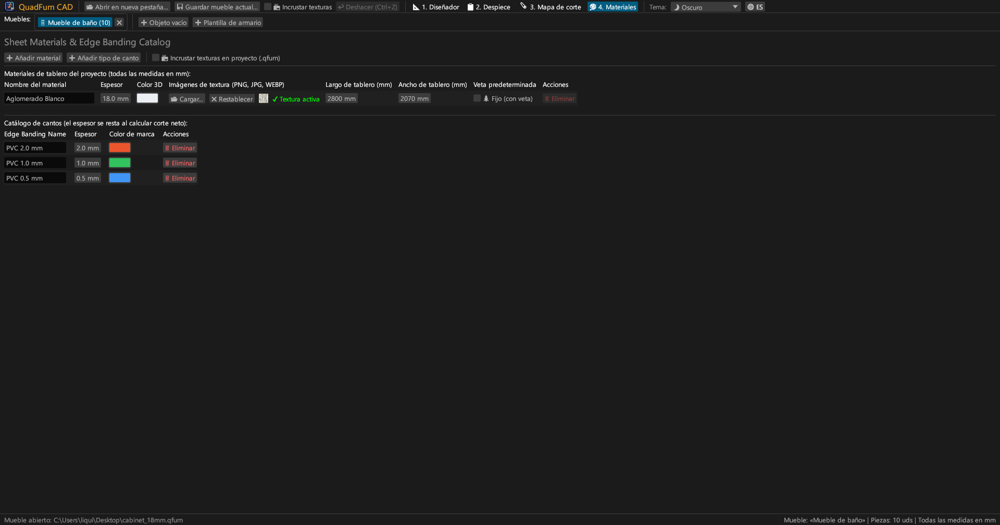
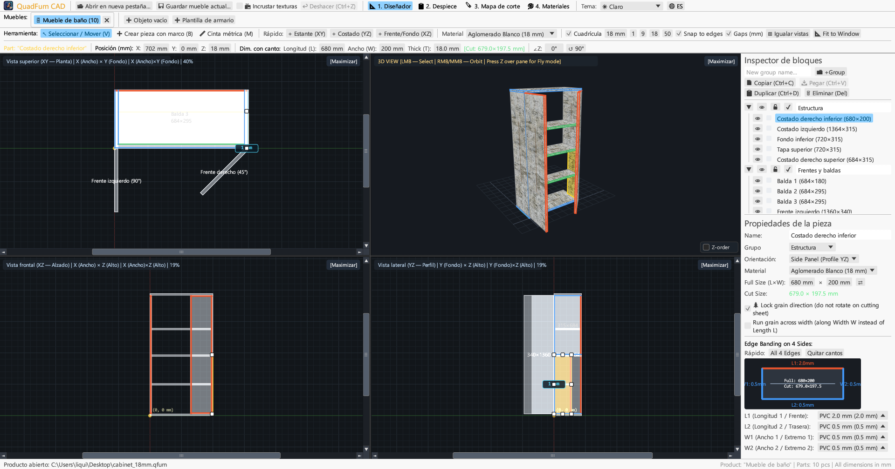
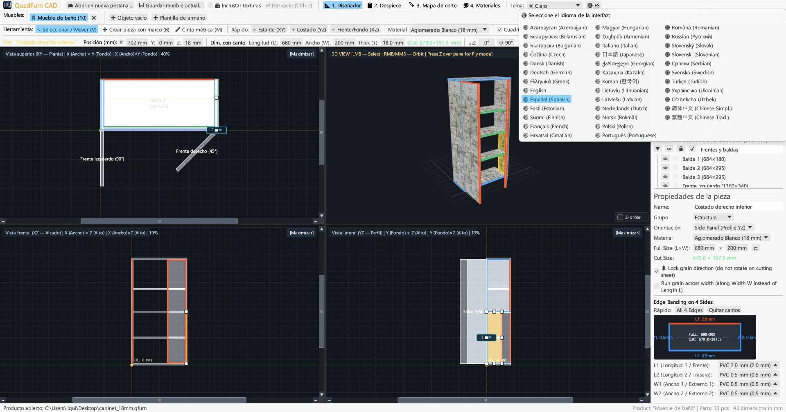

CAD rápido acelerado por hardware para carpinteros. Modelado en 4 vistas, barra de transformación con calculadora, deducción de cantos y optimización de corte.

Combina dibujo en 4 vistas, control numérico exacto y optimización de corte en una aplicación integrada.
Edición simultánea en Planta (XY), Alzado (XZ), Perfil (YZ) y 3D con barras de desplazamiento, ajuste magnético y medidas en vivo.
Entrada directa de coordenadas (X, Y, Z), medidas (L × An × Gr) y rotación con calculadora matemática (p. ej., 600-4 o (800-36)/2).
Asignación de cantos PVC/ABS (0.4–2.0 mm) a los 4 lados para calcular las medidas exactas de corte para la sierra escuadradora.
Optimizador de corte que respeta la veta de la madera, ancho de sierra (4.0 mm), refilado perimetral y registro de retales útiles.
Trabajo en varios muebles simultáneamente. Copiado y pegado de piezas entre pestañas con transferencia de materiales.
Exportación en A4 Horizontal: lista de piezas, dibujos en 4 vistas, diagramas de corte y resumen de materiales con +15% de margen.





Binarios portátiles independientes sin dependencias externas.
Ejecutable portátil con icono, no requiere instalación.
sudo apt install ./quadfurn_0.2.4_amd64.deb
Paquete universal para Apple Silicon (M1–M4) e Intel x86_64.
| Tecla | Acción | Ámbito |
|---|---|---|
| V | Herramienta Seleccionar / Mover (8 manejadores, recuadro de selección) | Vistas 2D |
| B | Crear pieza por recuadro en el plano actual | Vistas 2D |
| M | Herramienta de cinta métrica (medición exacta de distancias) | Vistas 2D |
| Z | Modo vuelo libre en primera persona (Noclip con WASD) | Ventana 3D |
| ← → ↑ ↓ | Desplazar piezas por paso de cuadrícula (Shift para paso doble) | Vistas 2D |
| Ctrl + C / V | Copiar / pegar piezas (funciona entre pestañas) | Todas las pestañas |
| Ctrl + D | Duplicar piezas seleccionadas | Proyecto activo |
| Ctrl + S | Guardar proyecto en archivo .qfurn / .json | Proyecto activo |
| Ctrl + Z | Deshacer última acción (hasta 40 pasos) | Proyecto activo |
| Delete / Backspace | Eliminar piezas seleccionadas | Proyecto activo |